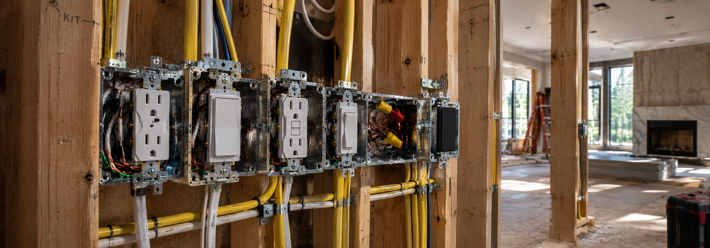

more information...
Practice real-world wiring methods through interactive virtual labs. Learn circuits, devices, grounding, and installation techniques.
Build Your Skills
Complete exercises covering receptacles,
switches, GFCI protection, lighting,
and circuit wiring.
What is WireLab?
WireLab is an interactive virtual electrical training
environment designed to provide hands-on practice with
electrical installation, wiring, and circuit-building
concepts.
How WireLab Works
-
Select Labs from the navigation menu to
view the available electrical training exercises.
-
Select Open Lab to enter an interactive
electrical work area.
-
Use the virtual toolbox to select electrical components
and wiring materials.
-
Place components into the virtual work area and organize
the electrical installation.
-
Make the appropriate wiring connections between devices,
cables, and power sources.
-
Use the available controls to check your work, reset the
exercise, and receive guidance.
FEATURE 01
Virtual Work Area
Build electrical circuits inside an interactive work area.
Components can be positioned, moved, and connected while
completing the assigned exercise.
FEATURE 02
Electrical Components
Practice working with junction boxes, receptacles, GFCI
devices, switches, lighting equipment, cables, and other
electrical components.
FEATURE 03
Interactive Training
Complete wiring exercises by interacting directly with
the virtual components and learning how different devices
are connected within a circuit.
Common Lab Controls
-
Start Exercise — Begins the selected
training exercise.
-
Check Work — Checks the current circuit
configuration against the exercise requirements.
-
Reset Exercise — Returns the exercise
to its starting configuration.
-
Add Box — Adds another junction box to
the virtual work area when available.
-
Remove Box — Removes a selected junction
box from the work area.
-
Rotate — Rotates a selected component or
junction box when the control is available.
-
Hint — Provides guidance for the current
exercise.
Electrical Components
-
Junction Box — Provides an enclosure for
electrical wiring connections.
-
Duplex Receptacle — A standard electrical
receptacle used to provide power to connected loads.
-
Half-Hot Receptacle — A receptacle
configured so that one portion can be controlled by a
switch.
-
GFCI Receptacle — A ground-fault circuit
interrupter device designed to help protect against
electrical shock caused by ground-fault current.
-
Single-Pole Switch — A switch commonly
used to control a lighting load from one location.
-
Light Fixture — A lighting device that
can be connected to a branch circuit.
-
Appliance Power Cord — A cord assembly
used to represent a portable electrical load connected
to a receptacle.
Electrical Safety
WireLab is intended for educational and training purposes.
Virtual practice should always be supplemented with proper
classroom instruction, applicable electrical codes, and
safe work practices.
-
De-energize circuits before performing electrical work.
-
Verify that power is off before handling conductors or
electrical devices.
-
Use properly rated tools, equipment, and personal
protective equipment.
-
Follow applicable electrical codes, regulations, and
instructor instructions.
-
Never use a virtual simulation as a substitute for
qualified electrical training or real-world safety
procedures.
Training Goal
The goal of WireLab is to provide a safe and interactive
environment where students can practice identifying
electrical components, understanding circuit layouts,
and developing wiring skills before applying those
concepts in a physical laboratory environment.
WireLab Development
WireLab is designed as a continuously developing training
platform. Additional electrical laboratories, components,
exercises, and interactive features can be added as the
training environment expands.